0% completed
Space-Based Architecture
On This Page
Know the Vocabulary
Part 1: The Problem in Detail
Why the Standard Scaling Playbook Reaches a Limit
The Central Trade-Off of the Pattern
Part 2: The Four Core Components
Component 1: The Processing Unit
Component 2: Virtualized Middleware
Component 3: Data Pumps
Component 4: Data Writers and Data Readers
Part 3: How a Request Flows
Part 4: Replication, Partitioning, and Consistency
Two Ways to Spread the Data
Data Collisions
The Consistency Model
Part 5: Elastic Scaling and Failure Handling
Elasticity
Failure Handling
Part 6: Where the Pattern Is Used
Part 7: Advantages and Limitations
Advantages
Limitations
Part 8: When to Use It
FAQs
Key Takeaways
Consider a concert ticketing site on the morning a major tour goes on sale.
Traffic does not ramp gradually. It goes from a few hundred users to several hundred thousand in under a minute, all of them trying to update the same few inventory records.
The team has done everything the standard playbook says: stateless application servers behind a load balancer, auto-scaling groups, a cache in front of the database, read replicas.
The application tier scales well. Then the database runs out of connections and write capacity, and requests start to time out.
This is the situation space-based architecture was designed for.
The insight behind it is that in most scalable web systems, the application tier is easy to scale and the database is not.
You can add a hundred web servers in minutes, but every one of them still sends its reads and writes to the same data store, and that store has hard limits on connections, lock contention, and write throughput. Caching helps with reads but does little for write-heavy, contended workloads like inventory decrements, bids, and order matching.
Space-based architecture addresses the bottleneck directly: it removes the database from the request path.
Keep the working data in memory, replicated across the same processing units that run the application logic, and write to the database asynchronously, off the critical path. The database becomes a durable archive rather than a live dependency.
The name comes from tuple space, a coordination model from the 1980s in which processes communicate through a shared memory (the "space") rather than by calling each other. A process writes small records called tuples into the space, and another process takes out the tuples whose fields match a pattern. A memory that is searched by content in this way, rather than by address, is called an associative memory.
Modern implementations use the same idea with an in-memory data grid as the shared space.
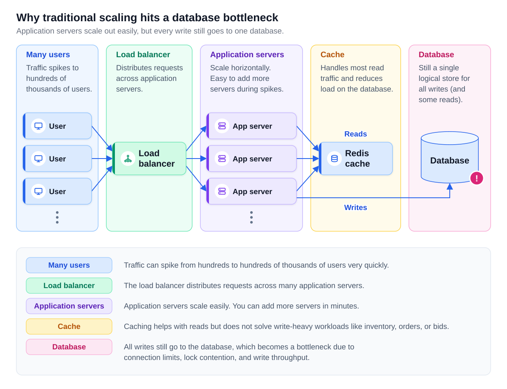
Know the Vocabulary
This lesson uses the terms below repeatedly. Read them once now and return here when a later section needs one.
- Write contention: Many requests changing the same record at the same moment, so each waits for locks that the others hold.
- In-memory data grid: A cluster of processes that hold data in RAM and share it over the network, such as Hazelcast or Apache Ignite.
- Sharding: Splitting a database's data by key across several databases (shards). A key that receives much of the traffic (a hot key) still overloads its one shard.
- Processing unit: The deployable building block of the pattern, which runs the application logic and holds part of the working data in the same process.
- Messaging grid: The middleware component that routes each request to a processing unit, often by key, to the unit that holds that key's data.
- Data pump: An asynchronous queue that carries each change from the grid toward the database. The processing unit does not wait for it.
- Write-behind: Updating memory first and writing to the database later from a queue, also called write-back. Write-through instead writes to both synchronously.
- Eventual consistency: A state where parts of a system hold different data for a short time and agree later.
- Data writer and data reader: A data writer applies data pump messages to the database. A data reader loads data from the database into the grid.
- Idempotency: The property that processing the same message twice produces the same result as processing it once. An idempotency key, such as the event ID stored in the database, lets a consumer detect and skip a repeat.
- Partition: One slice of the data in a distributed (partitioned) cache, owned by one primary unit that handles its writes, with backup copies on other units. A replicated cache instead gives every unit a full copy.
- Data collision: Two processing units updating the same data at nearly the same instant, so that their replicated changes cross and leave conflicting values.
- Optimistic concurrency: Detecting conflicts with a version number instead of locks. A write succeeds only if the version has not changed since the read.
- Consistent hashing: A way to assign keys to units so that adding a unit moves only a small fraction of the keys between running units (rebalancing).
Part 1: The Problem in Detail
Why the Standard Scaling Playbook Reaches a Limit
The conventional scaling progression for a web application goes in stages, and each stage pushes the bottleneck one step further back.
Scale the web tier horizontally, and the application tier becomes the limit.
Scale the application tier, and the database becomes the limit. Add read replicas and caching, and reads stop being the limit but writes remain.
Shard the database, and you can scale writes, but at the cost of cross-shard complexity, and hot keys still concentrate load on single shards.
At every stage the same structural fact holds: all the state lives in a shared, centralized store, and every request must touch it.
The cost of that touch is not just latency. It is connection slots, lock waits, transaction log throughput, and the coordination overhead of keeping a single logical store consistent.
Space-based architecture changes the structural fact. State moves into memory distributed across the processing nodes themselves.
A request reads and writes data that lives in the same process, or on a peer replica reachable at memory-network speed, rather than crossing to a remote database.
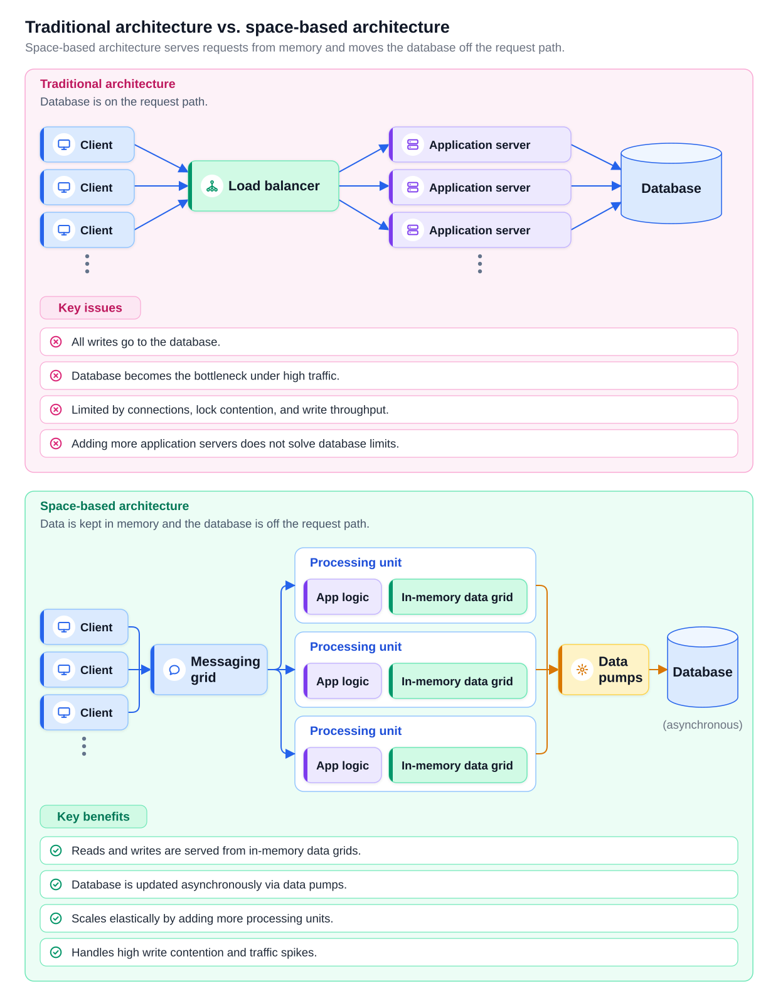
The Central Trade-Off of the Pattern
The pattern provides extreme elasticity and throughput. In exchange, it accepts weaker consistency guarantees, a hard-to-operate in-memory data layer, and a more complex programming model.
This is a deliberate exchange, and it is the reason the pattern is used selectively.
Most applications never need it.
The ones that do tend to have a very specific shape: highly variable traffic with sharp spikes, heavy write contention on a working set that fits in memory, and tolerance for brief inconsistency in return for speed.
Part 2: The Four Core Components
Space-based architecture is defined by four components. Understanding what each does, and what each hands off to the others, is the core of the pattern.
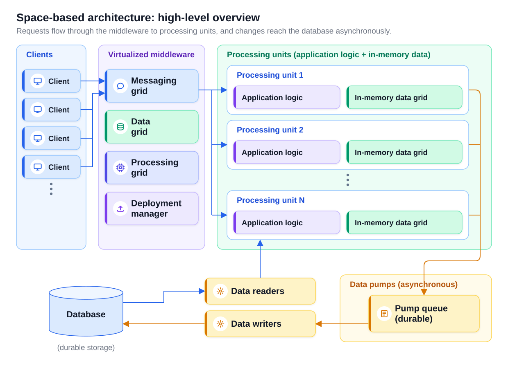
Component 1: The Processing Unit
The processing unit is the deployable building block of the architecture. Each one is a self-contained instance that bundles three things together. They are the application logic (the code that handles requests), an in-memory data grid (a local slice or copy of the working data), and optionally a replication engine that keeps its data in sync with other processing units.
The key idea is colocation. In a traditional tier-based design, the logic and the data live in separate tiers connected by a network. In a processing unit, the logic and the data live in the same process.
A read becomes a local memory lookup.
A write becomes a local memory update followed by replication to peers. There is no database call on the hot path, the code that runs on every request.
Processing units are started and stopped dynamically.
When load rises, the platform launches more processing units, each of which joins the grid, receives or builds its share of data, and begins serving requests.
When load falls, units are removed. This elastic behavior is what the pattern is for, and it is only possible because the units are self-sufficient: they do not depend on a central database being able to absorb their startup traffic.
Processing units can be specialized.
A single application might have a unit type for order handling, another for inventory, another for pricing, each holding only the data relevant to its function. Specialization limits the memory each unit needs and keeps data partitions small.
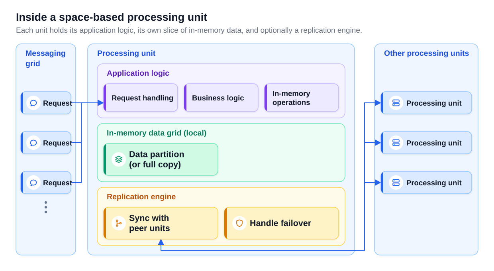
Component 2: Virtualized Middleware
The virtualized middleware is the infrastructure layer that manages the processing units and the communication among them.
It is typically made up of four sub-components, and it is what turns a set of independent nodes into a coordinated platform.
-
The messaging grid manages the flow of incoming requests. It receives a request and decides which processing unit should handle it. This is conceptually a smart load balancer. It can route round-robin, but it can also route by data affinity, sending all requests for a given key (a particular show, a particular auction, a particular account) to the unit that holds that key's data.
-
The data grid is the interaction point that manages data replication between processing units. When one unit updates a piece of data, the data grid propagates the change to the other units that hold copies. In most implementations, the data grid is not a separate server tier but a library embedded in each processing unit, working peer to peer.
-
The processing grid is an optional component that coordinates requests that span multiple processing unit types. If an order request needs both the order unit and the inventory unit, the processing grid orchestrates the call sequence between them.
-
The deployment manager starts and stops processing units based on load. It watches metrics such as request latency, queue depth, and CPU, and scales the number of units up or down. This is the element that delivers elasticity.
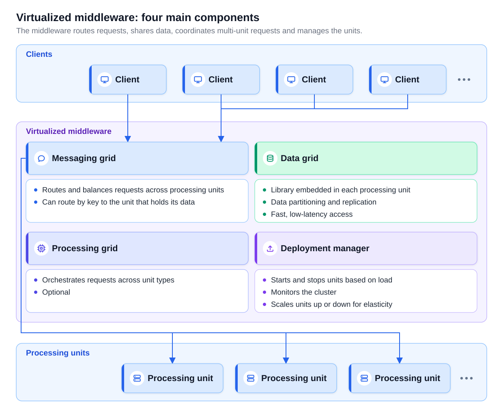
Component 3: Data Pumps
Data pumps are the mechanism for sending data from the in-memory grid to the database, and sometimes the other direction. They are asynchronous.
When a processing unit updates data in memory, it places a message describing the change onto a queue.
A separate consumer, the data writer, reads these messages and applies them to the database. The processing unit does not wait for the database write to finish.
This is a write-behind pattern, also called write-back.
The in-memory grid is the system of record for live traffic.
The database is updated shortly afterward, so it is eventually consistent with the grid, and it serves purposes such as durable long-term storage, analytics, reporting, and recovery.
Data pumps can be one-way (grid to database) or two-way. The reverse direction is handled by a data reader, which loads data from the database into the grid. It is used at startup to populate a new processing unit's memory, and to recover after a total grid failure.
A single logical stream of changes usually passes through multiple pumps.
One feeds the database writer. Another might feed an analytics pipeline. Another might feed a search index. Because the pumps are asynchronous and decoupled, adding another consumer of changes does not slow the request path.
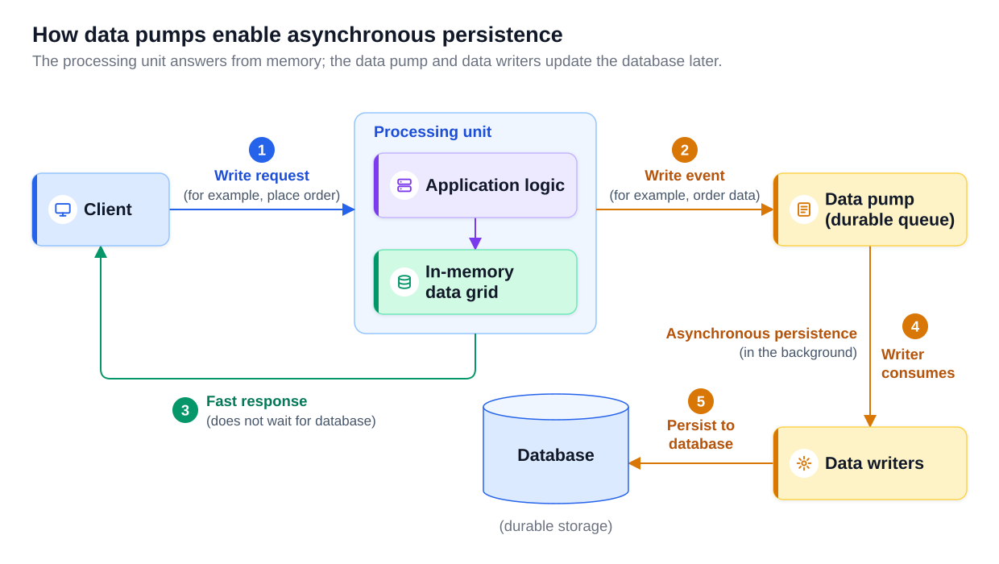
Component 4: Data Writers and Data Readers
Data writers are the components that take messages from the data pumps and apply them to the database.
Data readers are the components that read from the database and load data into the grid. They are the boundary between the in-memory world and the persistent world.
Writers must be idempotent and ordered per key, because a message might be delivered twice, and an older update must never overwrite a newer one.
A common technique is to include a version number or timestamp on each change and have the writer ignore any change older than what the database already holds.
Readers handle the cold start problem. When the grid is brought up fresh, or when a new partition is created, readers pull the relevant data from the database.
For large data sets, this warm-up is a real operational concern, because a new processing unit cannot serve traffic until it has loaded its data. Production systems often keep spare warmed units, or snapshot the grid state, to shorten this window.
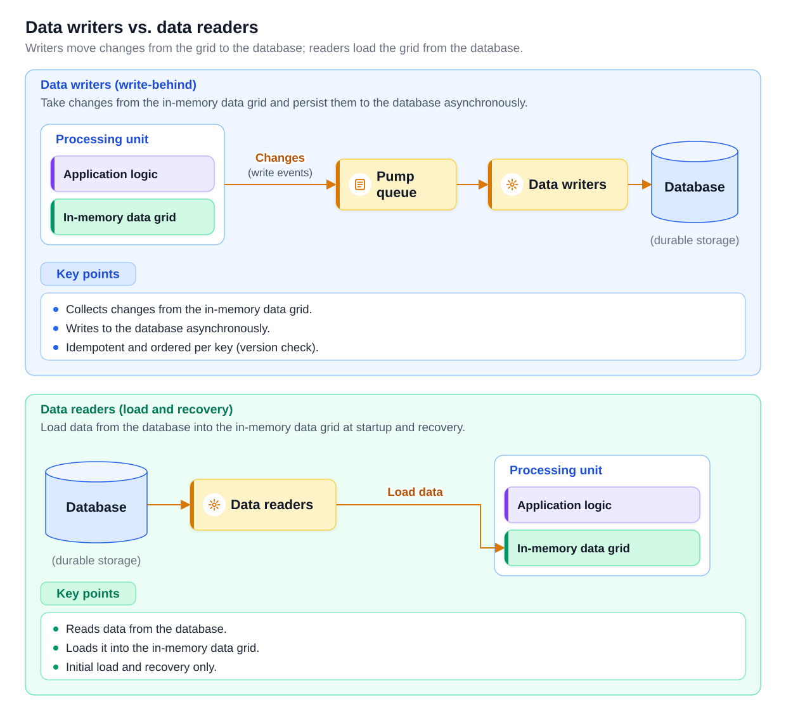
Part 3: How a Request Flows
Following one request through the system makes the mechanics concrete. Take a request to reserve three tickets for a particular show.
The request arrives at the messaging grid.
The grid looks at the show identifier and routes the request to a processing unit that holds that show's inventory data. If the data is partitioned, routing by show ID sends the request to the unit that owns that partition, so the read and write happen locally.
Routing by show ID means the most popular show sits on a single unit, which is the same hot-key limit that sharding has. The difference is that one in-memory owner can apply far more updates per second than a contended database row, because its path has no lock waits, no disk write, and no network call to a database. When one show is still too hot for one unit, its inventory is split further, for example into one counter per seating section, each with its own key and its own owner.
The processing unit checks the available count in its in-memory data, which takes microseconds.
If enough tickets remain, it decrements the count and records the reservation, again in memory. It then publishes the change to the data grid, which replicates the new count and the reservation record synchronously to a backup copy on at least one other unit, and waits for that backup to confirm.
The unit then places a message on the data pump queue describing the reservation and returns a response to the user. At this point the user has their reservation, and no database has been touched.
A data writer consumes that message a moment later and writes the reservation to the database.
If the processing unit crashes immediately after responding, the replica holds the updated count and the reservation and takes over, so the reservation is not lost. If the entire grid crashes, the data readers rebuild memory from the database, though any changes still sitting in the pump queue and not yet persisted are at risk unless the queue itself is durable.
The following sketch shows the shape of a processing unit's reservation logic. It is deliberately minimal, to show that the hot path touches only memory and a queue.
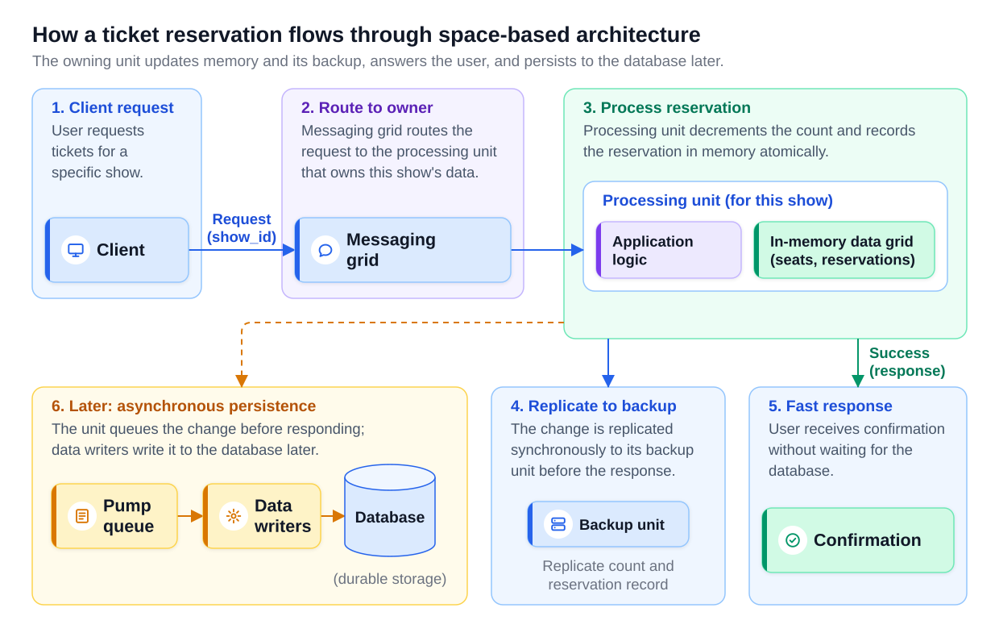
The code below is pseudocode, so the grid calls are a sketch, not a real library. Notice that the inventory change and the reservation record commit in one grid transaction, so a crash can never leave the count lowered with no reservation. The pump message goes out only after that commit, so the database never receives a reservation that the grid did not keep. Publishing after the commit is still a dual write, so a crash between the two steps leaves a committed reservation that never reaches the database. Grids with built-in write-behind close that gap by queuing the change as part of the same write, the same idea as the outbox pattern.
Notice that the version check is what protects against overselling when two requests contend for the last tickets on the same partition. That detail matters, and it leads directly to the central difficulty of the pattern.
Part 4: Replication, Partitioning, and Consistency
Two Ways to Spread the Data
How the data is distributed across processing units is the most important design decision in a space-based system, and there are two basic models.
Replicated cache. Every processing unit holds a full copy of the working data. A write to any unit is propagated to all the others. Reads are always local and extremely fast, and any unit can serve any request, which makes routing trivial and failure handling simple, since every other unit already has the data.
The cost is that every write must reach every unit, so write traffic scales with the number of units, and the whole working set must fit in each unit's memory. Replicated caches suit small to moderate data sets with a low write rate, such as reference data, configuration, and product catalogs.
Distributed (partitioned) cache. The data is split into partitions, and each partition lives on one primary unit with one or more backups on other units. A request must reach the unit that owns the relevant partition. Memory use scales out, since each unit holds only a fraction of the data, and write traffic is confined to a partition's primary and its backups.
The cost is that routing now matters, since the messaging grid must direct each request to the right owner, and some requests may need data from more than one partition. Distributed caches suit large data sets and high write rates, which is the situation that motivated the pattern in the first place. Most serious space-based systems partition their hot, write-heavy data and replicate their small reference data.
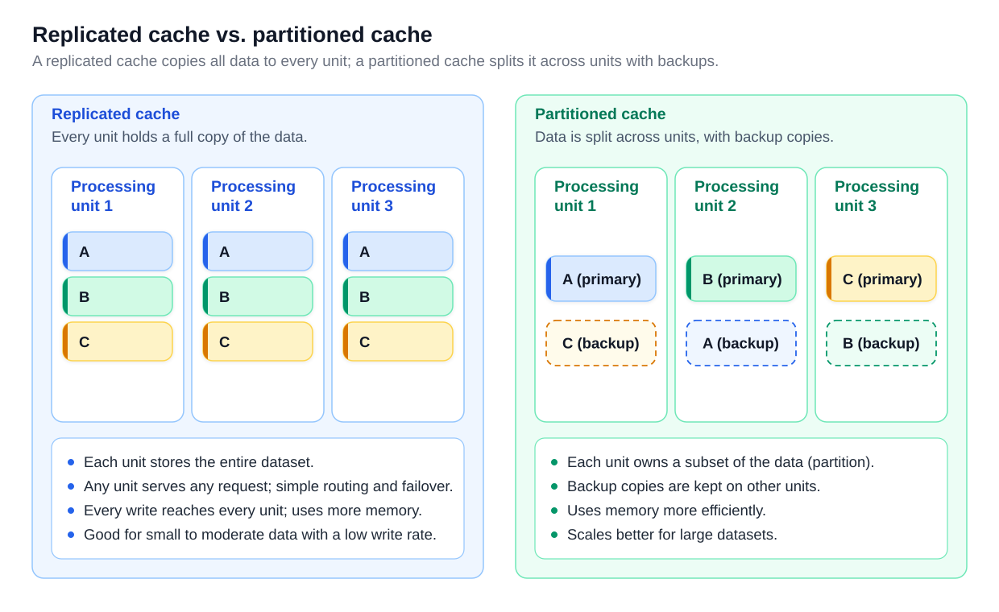
Data Collisions
In a replicated design, two processing units may update the same data at nearly the same instant.
Each applies its change locally, then replicates it, and when the changes cross, the units hold conflicting values. This is a data collision, and it is the characteristic hazard of the pattern.
The probability of collision depends on several factors: how many units there are, how fast the replication is, and how often the same key is written. More units mean more chances for simultaneous updates. Slower replication widens the window.
A frequently written key is exposed to more conflicts.
Mark Richards and Neal Ford, in Fundamentals of Software Architecture, give a rough estimate for a replicated cache: collision rate ≈ N × (UR² ÷ S) × RL. Here N is the number of processing units, UR is the update rate per second, S is the number of rows in the cache, and RL is the replication latency in seconds.
Take 5 units, 20 updates per second, 50,000 rows, and a replication latency of 100 milliseconds. The estimate is 5 × (20² ÷ 50,000) × 0.1 = 0.004 collisions per second, or about 14 per hour out of 72,000 updates. With 100 units instead of 5, the rate rises to 0.08 per second, about 288 per hour. With 5 units but a replication latency of 1 second, it rises to about 144 per hour. The formula assumes that updates are spread evenly across rows, so treat it as a best case when a few rows receive most of the writes.
A system with a dozen units updating read-mostly data will rarely see collisions, while a system with hundreds of units updating a hot inventory counter will see them constantly.
There are several ways to deal with this.
Partitioning the hot data so each key has exactly one writer eliminates collisions for that key by construction, which is why partitioned caches are favored for contended state.
Optimistic concurrency, as in the code above, detects conflicts with a version check and forces a retry, trading throughput under contention for correctness. The check works only where every write to the key meets the same copy, such as a partition owner. A unit checking its own replicated copy cannot see a write still in flight from a peer.
Conflict resolution rules, such as last write wins or merge functions, accept collisions and define a deterministic way to reconcile them, which is only appropriate when the data tolerates it. And for the truly critical invariants, such as not overselling, routing all writes for a key to a single owner is the reliable answer.
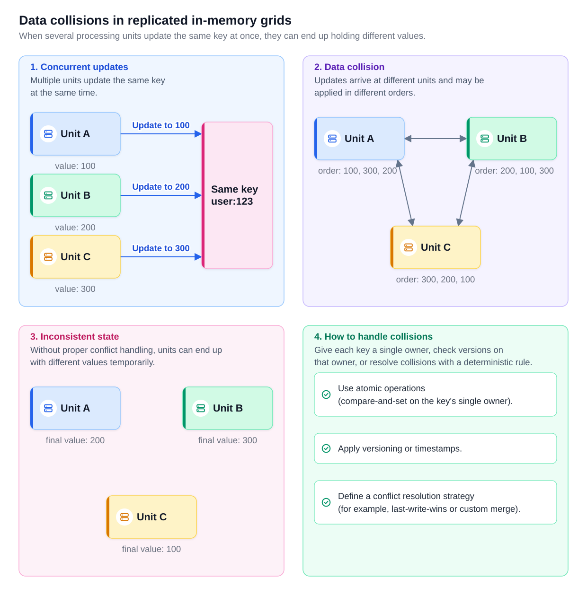
The Consistency Model
Space-based systems are generally eventually consistent between the grid and the database, and between the copies of a replicated cache. Strong consistency is simplest within a single partition owner. Grids such as Apache Ignite and Hazelcast can also run transactions that span partitions, but each one pays a coordination cost between the owners.
The grid is the live truth.
The database lags behind it by the depth of the data pump queue, which is normally milliseconds to seconds but can grow under load.
This has real consequences.
A report that reads from the database may not yet reflect the most recent transactions.
A failure that loses the grid and its in-flight queue can lose acknowledged writes.
Designers handle this by making the pump queue durable, by replicating the grid synchronously to at least one backup before acknowledging a write, and by being explicit about which operations require stronger guarantees and routing them accordingly.
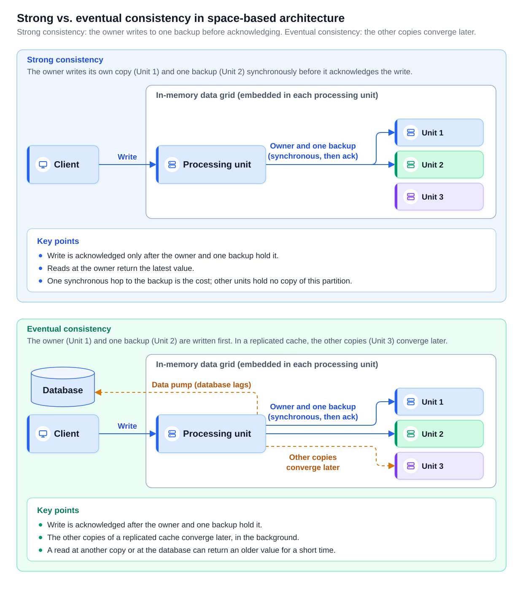
Part 5: Elastic Scaling and Failure Handling
Elasticity
The deployment manager monitors load signals and adjusts the number of processing units.
When a spike hits, it launches additional units. Each new unit must join the grid, take ownership of some partitions or receive replicas, load its data (from peers or the database), and then be added to the messaging grid's routing.
This is where the pattern's operational difficulty concentrates.
Scaling out a partitioned grid means rebalancing: moving partitions between units while they continue to serve traffic.
Rebalancing consumes network and CPU, and doing it in the middle of a traffic spike can make the spike worse.
Production systems therefore tend to scale ahead of known events, such as a scheduled ticket sale, rather than relying purely on reactive scaling. They also limit data movement. Most grids, such as Hazelcast and Oracle Coherence, use a fixed partition count: the number of partitions never changes, and scaling moves whole partitions between units. Others use consistent hashing. Either way, adding a unit moves only a small fraction of the data.
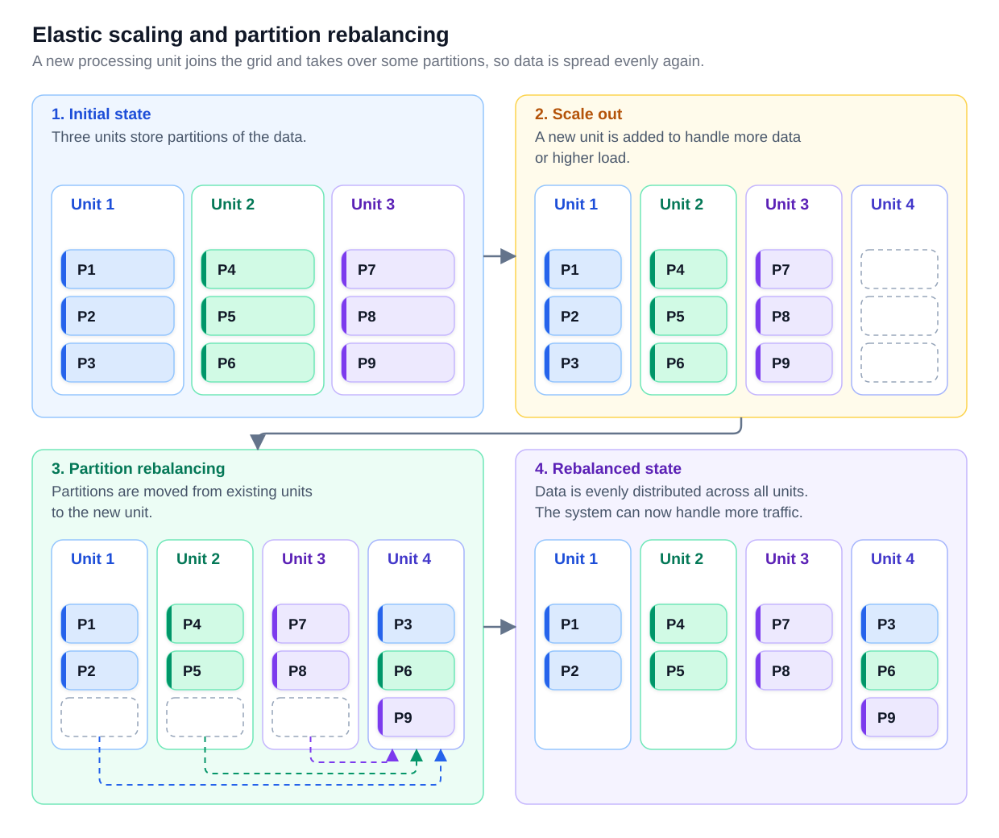
Failure Handling
Failure handling relies on backups. Each partition has a primary and one or more backups on different units, ideally in different failure domains (parts of the infrastructure that fail together, such as one data center or one cloud availability zone).
When a primary fails, a backup is promoted, and the grid creates a new backup on another unit to restore the redundancy level.
The failure modes worth knowing are these.
A single unit failing is routine and handled by promotion.
Simultaneous loss of a primary and all its backups loses that partition's in-memory data, which must then be rebuilt from the database and may lose recent writes still in the pump queue.
A network fault can split the grid into two groups that cannot reach each other, each believing it owns a partition. This is the split-brain problem. Grids handle it in one of two ways. Quorum rules let only the side holding a majority of the units continue. Merge policies let both sides continue and reconcile conflicting values when the network heals, which suits only data that tolerates a lost update. And a total grid loss falls back to the data readers rebuilding everything from the database, which can take a long time for large data sets.
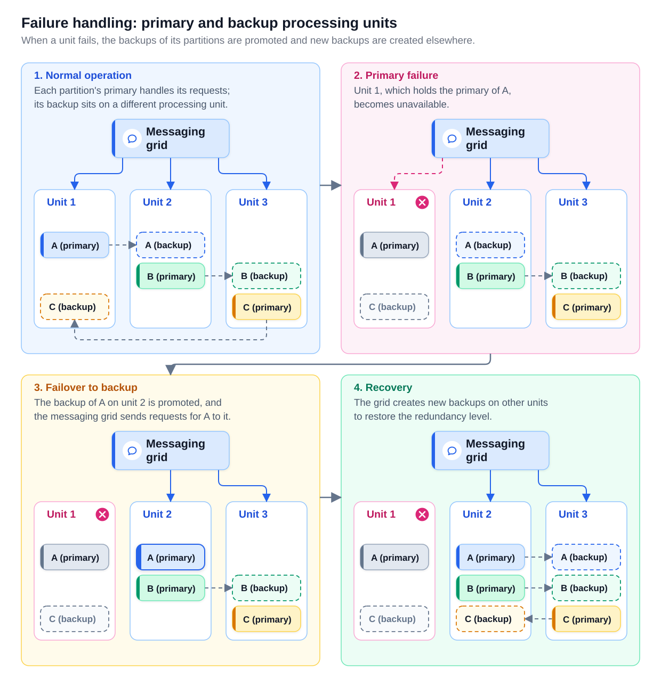
Part 6: Where the Pattern Is Used
Space-based architecture appears in domains where load is extremely spiky, writes are contended, and the speed of response matters more than immediate global consistency.
-
Online ticketing and flash sales. The canonical case: a sudden surge of buyers competing for a small, fixed set of items, where the contended counter is the entire problem.
-
Online auctions and bidding. Bids on a popular item arrive in bursts, especially near closing time, and each bid must be compared against the current highest bid with low latency.
-
Trading and financial matching. Order books and risk calculations are held in memory for speed, with persistence handled asynchronously. Many low-latency trading platforms are built on in-memory data grids for exactly this reason.
-
Gaming and real-time leaderboards. Large numbers of concurrent state updates, with session and score data best served from memory.
-
Telecommunications and session management. Call routing and session state have to be handled at very high rates with minimal latency.
On the technology side, the pattern is implemented with in-memory data grid products such as Hazelcast, Apache Ignite, Oracle Coherence, and GigaSpaces (the product most directly associated with the term). Redis in cluster mode is also used when it serves as the primary store for hot state, though Redis runs as a separate tier rather than inside the processing units. The tuple space ancestry shows up in systems derived from Linda and JavaSpaces.
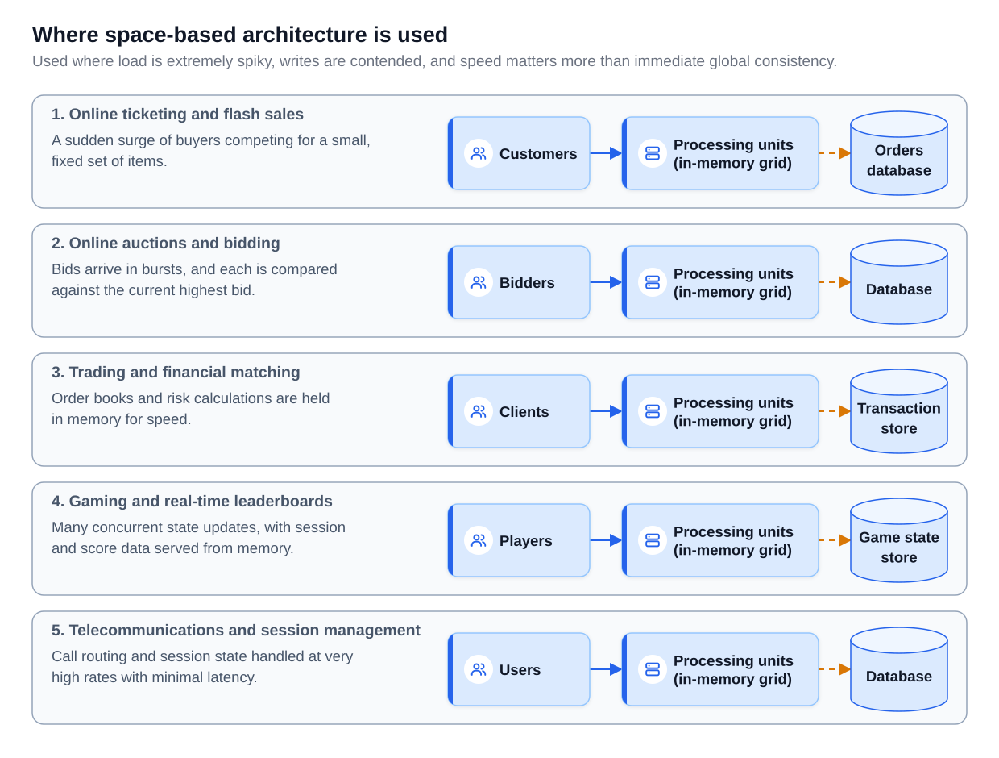
Part 7: Advantages and Limitations
Advantages
-
Elastic scalability. Because processing units are self-contained, capacity can be added and removed quickly without the database becoming a limiting dependency.
-
Very low latency. Reads and writes go to memory, not a remote database, so data access drops from milliseconds to microseconds. The end-to-end response still includes network hops, so it stays in milliseconds, but the database no longer adds to it.
-
Resilience to database slowdowns. Since the database is off the critical path, a slow or briefly unavailable database does not stop request processing. The pump queue absorbs the backlog.
-
High write throughput on contended data. Partitioning hot keys to single owners avoids the lock contention that limits a shared database under heavy write load.
Limitations
-
Complexity. This is among the most complex architecture patterns to build and operate. It combines distributed in-memory data, replication, asynchronous persistence, and dynamic scaling, and each of those is hard on its own.
-
Weaker consistency. The grid and the database are only eventually consistent, collisions are possible in replicated data, and acknowledged writes can be lost in compound failures unless carefully engineered against.
-
Memory limits. The working set must fit in cluster memory. Terabyte-scale data sets are expensive to hold in RAM, and the pattern fits poorly with workloads that touch huge amounts of data.
-
Expensive to run. In-memory capacity costs more per gigabyte than disk, and replication multiplies it. The cost is justified only when the traffic profile demands it.
-
Difficult testing and debugging. Reproducing a scale-out race condition or a rebalancing bug is hard, and the usual testing tools do not model them well.
-
Poor fit for analytics and complex queries. In-memory grids handle key-based access well but are weak at the ad hoc, relational queries that a database handles easily. Reporting typically runs against the database or a downstream warehouse, with the lag that implies.
Part 8: When to Use It
Choose space-based architecture when all of the following traits hold. The traffic has extreme and unpredictable spikes that the database cannot absorb. The write load is heavy on a working set that fits in memory. The business can tolerate brief inconsistency between the live state and the persistent record.
The classic signal is that you have already scaled the application tier, added caching, added replicas, and the database is still the bottleneck.
Avoid it when the load is steady and predictable, or when the data set is far larger than memory. Also avoid it when strong transactional consistency across many entities is required, or when the team lacks the operational maturity to run a distributed data grid.
For most applications, a well-tuned database with caching and queues is simpler, cheaper, and sufficient.
A useful middle path is to apply the pattern to one hot spot rather than the whole system.
Keep the main application on a conventional architecture, and use an in-memory grid with write-behind only for the inventory counter or the bidding engine. This captures most of the benefit for a fraction of the complexity.
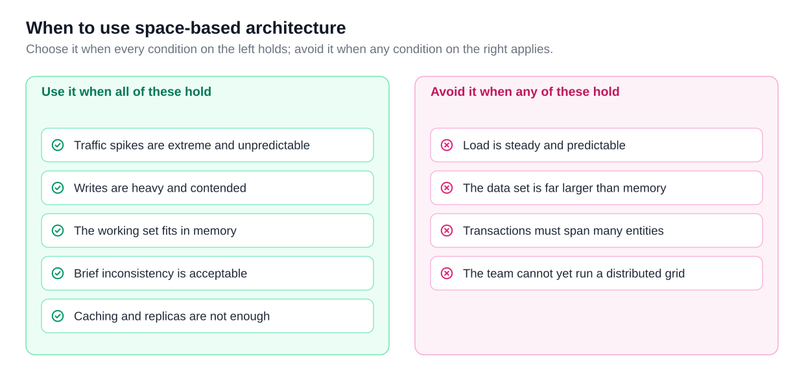
FAQs
Q: How is space-based architecture different from just putting a cache in front of the database?
A cache sits beside the database and speeds up reads, but the database remains the system of record, and every write still goes to it synchronously. A space-based system makes the in-memory grid the system of record for live traffic and persists to the database asynchronously. That is what removes the database from the write path, and write contention is exactly what a read cache cannot fix. The grid is also colocated with the application logic and replicated across units, rather than being a separate cache tier.
Q: What is the difference between write-through, write-behind, and cache-aside?
Cache-aside has the application read the cache first and fall back to the database on a miss, writing to the database directly. Write-through writes to the cache and the database together, synchronously, so writes are as slow as the database. Write-behind writes to the cache and queues the database write to happen later, which is what space-based architecture uses. Write-behind gives the lowest write latency but risks losing writes that were acknowledged but not yet persisted, which is why a durable queue and replicated memory matter.
Q: How do you prevent overselling a limited item in this architecture?
By making sure that all writes to a given item go through a single owner at a time. Partition the inventory by item identifier, and route every request for that item to the partition's primary through the messaging grid. On the in-memory counter, use a version check or an atomic compare-and-set (an update that succeeds only if the value still equals what was read). Once the owner has made the decision, it replicates the change synchronously to the partition's backup before it acknowledges the write. Replicated-everywhere designs in which each unit writes its own copy cannot guarantee this under contention, which is why contended counters belong in partitioned grids.
Q: What happens to data if the whole grid crashes?
Anything already written to the database through the data pump is safe, and the data readers rebuild the grid from it. Anything acknowledged to users but still in memory or in a non-durable pump queue can be lost. Teams reduce the exposure in three ways. They replicate each partition synchronously to at least one backup in another availability zone before acknowledging a write. They use a durable log such as Kafka for the data pump, so that unpersisted changes survive a grid crash. They also snapshot the grid periodically. The acceptable loss window is a business decision made explicit in the design.
Q: Is space-based architecture the same as microservices?
No. They address different problems. Microservices decompose an application by business capability for organizational and deployment independence, and each service typically owns a conventional database. Space-based architecture is about removing the database as a scaling limit by keeping live data in a distributed in-memory grid. The two can be combined, for example a ticketing microservice implemented as a space-based system, but neither implies the other.
Q: How does it relate to the tuple space and Linda?
Tuple spaces, introduced by David Gelernter's Linda model, let processes coordinate by writing tuples into a shared associative memory and reading or taking matching tuples out, without knowing about each other. JavaSpaces and early GigaSpaces products implemented this directly. Modern space-based architecture keeps the idea of a shared data space that decouples producers and consumers, but implements it as a partitioned, replicated in-memory data grid with richer querying and persistence.
Q: When would you choose it over sharding the database?
Sharding scales writes by splitting data across multiple databases, but each request still pays database latency, connection limits, and transaction costs, and hot keys still overload a single shard. Space-based architecture is the better fit when you need microsecond data access, extreme spike absorption, and elastic scaling in minutes. Sharding is the better fit when the data is too large for memory, when you need durable synchronous writes, or when the team wants to stay within conventional database operations. Many systems start with sharding and adopt a grid only for the hottest path.
Q: How would you describe the pattern in a system design interview?
State the problem first: the application tier scales but the database does not, particularly for contended writes during spikes. Then describe the solution: processing units that bundle logic and an in-memory grid, partitioned by key with backups, a messaging grid that routes by key, and asynchronous data pumps that persist to the database. Name the trade-offs unprompted: eventual consistency with the database, collision handling, memory cost, and operational complexity. Finish by saying where you would apply it narrowly rather than everywhere. That shows you understand both the mechanism and the judgment about when it is justified.
Key Takeaways
-
Space-based architecture removes the database from the request path. Live data is held in an in-memory grid colocated with application logic, and the database is updated asynchronously.
-
The four components are processing units, virtualized middleware, data pumps, and data writers and readers. Processing units hold logic and data together, the middleware routes requests and manages scaling, the pumps move changes to the database asynchronously, and the writers and readers bridge memory and persistence.
-
Partitioned caches suit large, write-heavy data; replicated caches suit small, read-mostly data. Most real systems use both, partitioning contended state and replicating reference data.
-
Data collisions are the pattern's signature hazard. Avoid them by giving each hot key a single owner, detect them with version checks, or resolve them with explicit merge rules.
-
Consistency is eventual between the grid and the database. The pump queue lag defines how stale the database is, and compound failures can lose acknowledged writes unless synchronous backup replication and a durable pump are used.
-
Elasticity is powerful but operationally delicate. Rebalancing partitions during a spike can make it worse, so teams scale ahead of known events and use a fixed partition count or consistent hashing to limit data movement.
-
The pattern is complex, memory-bound, and expensive. It is justified only when spiky traffic and contended writes still overload the database after caching and read replicas are in place.
-
Applying it to one hot spot is often the best compromise. Keep the rest of the system conventional and use the grid for the inventory counter, the bidding engine, or the order book.
0 Comments
No comments yet. Be the first to start the discussion!
Reading Progress
0%
On This Page
Know the Vocabulary
Part 1: The Problem in Detail
Why the Standard Scaling Playbook Reaches a Limit
The Central Trade-Off of the Pattern
Part 2: The Four Core Components
Component 1: The Processing Unit
Component 2: Virtualized Middleware
Component 3: Data Pumps
Component 4: Data Writers and Data Readers
Part 3: How a Request Flows
Part 4: Replication, Partitioning, and Consistency
Two Ways to Spread the Data
Data Collisions
The Consistency Model
Part 5: Elastic Scaling and Failure Handling
Elasticity
Failure Handling
Part 6: Where the Pattern Is Used
Part 7: Advantages and Limitations
Advantages
Limitations
Part 8: When to Use It
FAQs
Key Takeaways